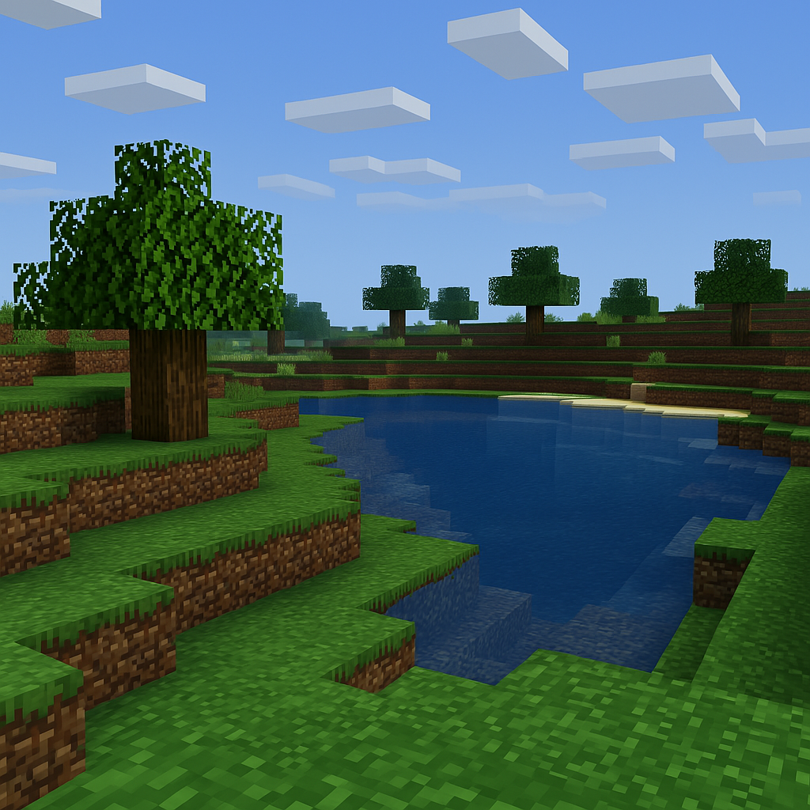
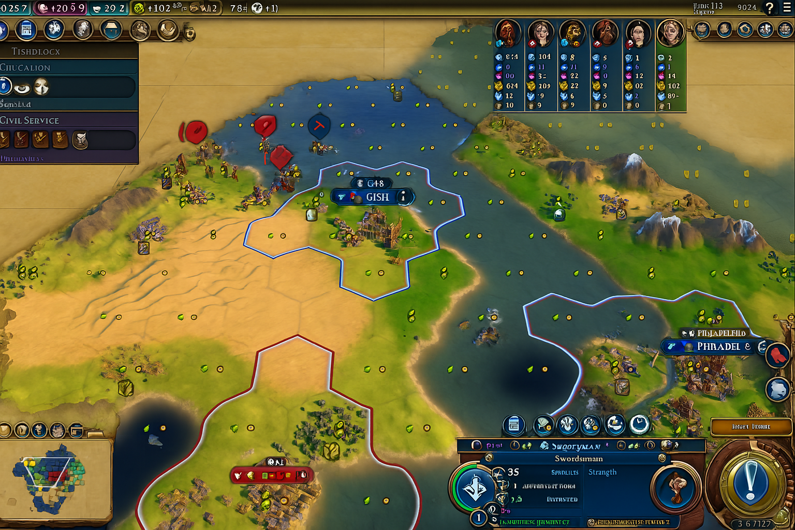
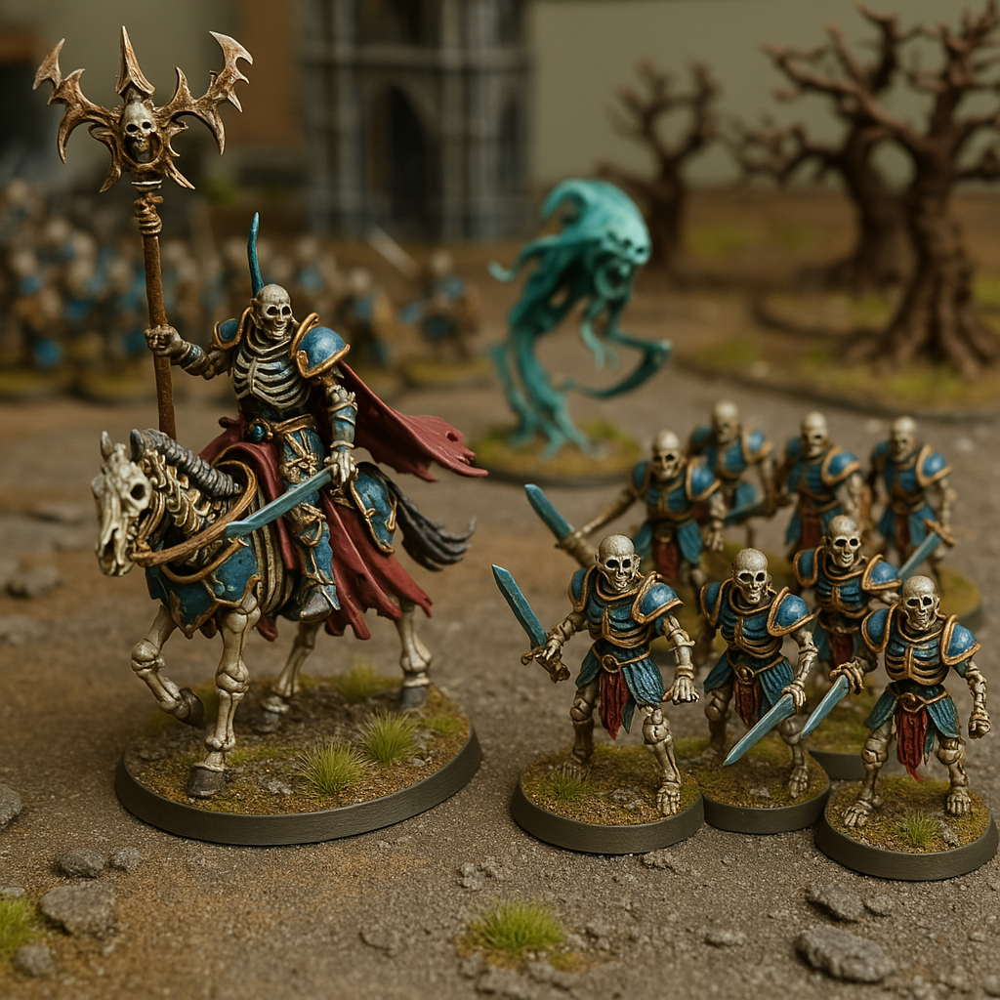

Informatyka i Matematyka
Moim największym zainteresowaniem jest algorytmika oraz teoria obliczeń. Potrafię godzinami analizować szczegóły działania algorytmów grafowych, takich jak algorytm Dijkstry, który znajduje najkrótszą drogę między węzłami w grafie ważonym, albo algorytm Tarjana, który pozwala na wykrywanie silnie spójnych składowych w grafach skierowanych. Fascynują mnie również teoretyczne aspekty informatyki, takie jak problem stopu, który pokazuje fundamentalne ograniczenia obliczalności, oraz twierdzenie Rice'a, które precyzuje granice tego, co można zdecydować o programach komputerowych.
Lubię rozważać problemy matematyczne i programistyczne z dużą precyzją oraz analizować teoretyczne podstawy ich rozwiązań.
Gry komputerowe
Gry komputerowe są jednym z moich ulubionych sposobów na spędzanie wolnego czasu. Uwielbiam gry, które pozwalają na kreatywne podejście do rozgrywki, takie jak Minecraft, gdzie mogę spędzić wiele godzin budując skomplikowane mechanizmy z redstone'a lub eksplorując nieskończenie generowane światy. Bardzo lubię także strategiczne gry z serii Civilization, w których można rozwijać cywilizacje i analizować złożone mechaniki rozgrywki.
Mam również słabość do gier na konsolę Nintendo, szczególnie takich jak The Legend of Zelda czy Super Mario, które cenię za ich kreatywną rozgrywkę, wciągające historie oraz perfekcyjną mechanikę gry.
 Warhammer Age of Sigmar
Z dużą pasją zbieram, maluję oraz gram figurkami Warhammer Age of Sigmar. Proces malowania figurek pozwala mi na skoncentrowanie się na drobnych szczegółach, które dają mi dużą satysfakcję. Gra sama w sobie wymaga strategicznego myślenia oraz znajomości reguł, które uwielbiam analizować i wykorzystywać podczas rozgrywek.
To hobby daje mi nie tylko możliwość odpoczynku, ale także pozwala na rozwijanie kreatywności i dokładności.
